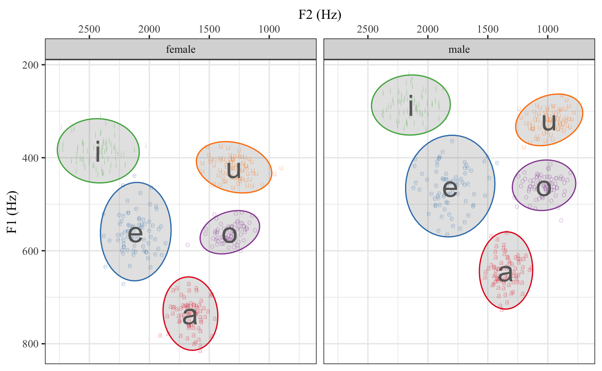

Overview
This is a collection of R functions that I often use in my research. Some are borrowed and edited, others are my own. Feel free to fork and edit as you see fit.
Current functions
-
A: Calculate A (discrimination experiments) -
aPrime: Calculate A’ (discrimination experiments) -
b: Calculate B (discrimination experiments) -
biVarPlot: Fit a linear model to two variables and plot the results -
bPrimed: Calculate b’’d (b double prime d) (discrimination experiments) -
cross_over: Calculate 50% crossover point between categorical dependent variable (logistic regression) -
dPrime: Calculate d’ (discrimination experiments) -
eb: Wrapper function forbarplot()that adds error bars -
euc.dist: Calculate the euclidean distance between points/vowels (production experiments) -
inv_logit: Calculate the inverse logit from a GLM object (log odds to probability) -
lm_ex: Creates a scatter plot and fits a linear model. Used for teaching. -
vowel_plot: Takes a dataframe of formant data and creates a vowel plot.
Data sets
These have been moved to the untidydata package.
Installation
In order to install this package you must have devtools and version 3.1.3 of R. Don’t know if you have devtools? Copy and paste this into your console:
R will load devtools if you have it, otherwise it will give you an error, in which case you should copy and paste the following code into the console:
Now that you have devtools installed, you can install lingStuff.
Examples
Here are some examples of the functions. You might want to install tidyverse if you haven’t already.
vowel_plot
library(lingStuff)
library(tidyverse)
library(untidydata)
spanish_vowels %>%
separate(., col = label, into = c('id', 'gender', 'vowel'), sep = "-") %>%
vowel_plot(data = ., vowel = 'vowel', f1 = 'f1', f2 = 'f2', group = 'gender')## vowel gender f1 f2
## 1 a female 735.1713 1657.2717
## 2 e female 558.8545 2113.2856
## 3 i female 385.0679 2426.1463
## 4 o female 560.2237 1328.5739
## 5 u female 420.5353 1293.4553
## 6 a male 642.3957 1347.9507
## 7 e male 460.9596 1813.4000
## 8 i male 286.6176 2141.5392
## 9 o male 459.1942 1031.0266
## 10 u male 318.6032 987.9089